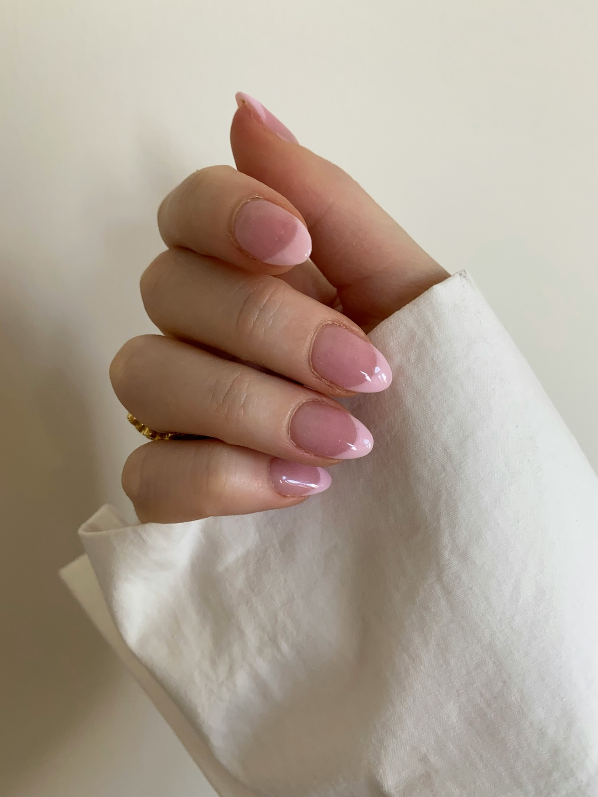

Start-here basics
The five supplies worth owning, and the two-minute prep routine that matters more than the polish you buy.
A nail art site for people like me who can’t draw a straight line and have accepted that.

I started this site after ruining my fourth manicure in a row trying to freehand a French tip I saw on a professional’s page. It looked easy. It was not easy. What actually fixed my nails wasn’t more practice with a detail brush — it was picking designs that hide a wobble instead of designs that show one off.
That’s the whole idea behind Second Coat: every tutorial here is chosen because it forgives mistakes, not because it photographs well. If a design needs a professional’s hand to look right, it doesn’t make the cut.
This homepage is the first of three pages I’m building for the class. The other two will cover the actual how-tos, but here’s a preview of what I’m planning so you know what to expect.
The five supplies worth owning, and the two-minute prep routine that matters more than the polish you buy.
Jelly manicures, reverse gradients, and other looks that hide a shaky hand instead of showing one off.
Smudges, bubbles, and chips — what caused them and how I actually fix them, not just cover them up.
None of this is original technique — I picked it up from people who’ve been painting nails a lot longer than I have. These are the channels I keep coming back to when I’m stuck: